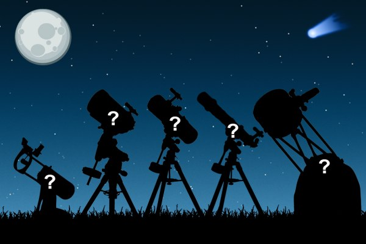

Помощник по выбору телескопа — белый список телескопов
Добро пожаловать в помощник по выбору телескопа!
Данный сервис я разработал специально для тех людей, которым нужно быстро выбрать хорошую модель телескопа исходя из бюджета и места наблюдения.Данный сервис я разработал специально для тех людей, которым нужно быстро выбрать хорошую модель телескопа исходя из бюджета и места наблюдения.
Важное замечание №1:
Важное замечание №1: если телескоп планируется использовать в качестве зрительной трубы для наземных наблюдений, лучше обратить внимание на линзовые телескопы с азимутальной монтировкой.
Важное замечание №2: перед покупкой телескопа обязательно уточните у продавца вес телескопа и примерные габариты в собранном состоянии, чтобы потом не оказалось, что телескоп слишком тяжелый для транспортировки или не помещается на балконе.
Пожалуйста, укажите бюджет покупки, а затем выберите место наблюдения:
-
До 25 тыс. рублей
-
Для балкона:
- Sky-Watcher BK705AZ2
- Sky-Watcher BK707AZ2
- Sky-Watcher BK 709EQ2
-
Для двора:
- Sky-Watcher BK707AZ2
- Sky-Watcher BK 709EQ2
- Sky-Watcher BK767AZ1
-
Для балкона:
-
25-30 тыс. рублей
-
Для балкона:
- Sky-Watcher BK 705AZ3
- Sky-Watcher BK809AZ3
- Sky-Watcher BK909AZ3
-
Для двора:
- Sky-Watcher BK705AZ3
- Sky-Watcher BK809AZ3
- Sky-Watcher BK909AZ3
- Sky-Watcher BK809EQ2
- Meade Infinity 90 мм
- Meade StarPro AZ 90 мм
- Meade Polaris 90 мм
-
Для балкона:
О методике подбора телескопа
Достаточно многочисленная категория людей покупает телескоп кому-то в подарок (например, ребенку). Сами эти люди астрономией обычно не увлекаются и не хотят вникать в тонкости выбора телескопа. Им просто нужен быстрый и конкретный ответ на вопрос — какой хороший телескоп можно купить за определенную сумму. Не менее часто начинающие любители астрономии жестко ограничены в бюджете покупки и не готовы отдать за первый телескоп больше определенной суммы. Я составил небольшую табличку хороших и недорогих телескопов, которые себя отлично зарекомендовали как среди новичков, так и продвинутых любителей астрономии. Многими телескопами из этого списка я пользовался лично, поэтому я имею ясное представление о тех или иных нюансах и особенностях использования. По сути дела, пользуясь данным сервисом, Вы полностью полагаетесь на моё мнение, однако спешу уверить Вас — плохой телескоп никогда я не посоветую. Во всяком случае, эти телескопы полностью оправдывают свою стоимость и при правильном подходе они покажут много чего интересного на небе. Список телескопов будет постоянно пополняться.
В данном списке нет телескопов диаметром менее 70 мм. На мой взгляд, 70 мм — это минимум для начинающего любителя астрономии. В меньшие телескопы также можно что-то рассмотреть, однако возможности таких телескопов гораздо скромнее.
Критериев выбора в данном случае не так уж и много — сумма покупки и место наблюдения. Ни о каком астрофото пока речи не может и быть — это совершенно отдельный разговор и совсем другая ценовая категория. Тем не менее, простые снимки Луны или планет вполне можно делать даже через бюджетные телескопы.
Если Вы хотите ознакомиться более подробно с методикой выбора телескопа (что я очень рекомендую сделать) — специально для Вас я написал ряд простых и понятных статей:
Что видно в телескоп?
Выбор телескопа
Чёрный список телескопов
У меня появился телескоп. Что дальше?